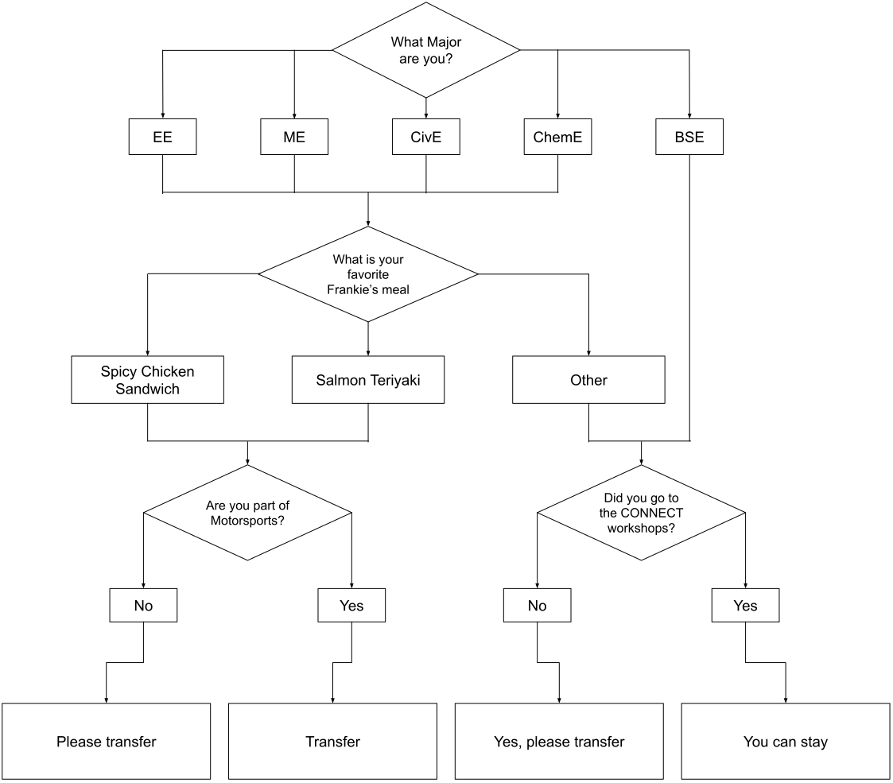

Breaking News!
- Culture show runs for record short 0 hours and 0 minutes, highest ratings in history
- Cooper trains machine learning model on student body after entire admissions department quits - results rejected for lack of diversity
- Student creates email spam filter, accidentally deletes all of Laura Spark’s messages
- Students continue to look for missing unsubscribe button on Cooper emails
- CivE department job requirements now include inability to use computers
- Cooper unveils new Mental Health Days to allow students to wallow in self-pity over lack of spring break.
- Great Hall listed for rent on Craigslist
- Free tuition fades into distant memory
- Cooper botanical garden in shambles
- Professors complain to laptop manufacturers about sudden wave of camera failures
- Adjunct professor working two full time jobs finds time to teach at Cooper between hours of 12 and 4 am
- Seniors wonder why they have to pay tuition after teaching themselves for 4 years
- Zoom and Teams factions rumored to be building up bandwidth for arms race
- Cult forms around weird bird statue sitting on roof of the NAB
- Title IX complaint system streamlined - now goes directly to shredder
- Cooper installs new perfectly flat glass ceiling in atrium with focal length at Title IX coordinator’s office
- Zeta Psi reported to be in hospital - critical condition
- 80% of Cooper Students do not know there is a frat
- Incoming Cooper students disappointed that there is no Greek life
- Underclassmen unaware that Zachary Friedman got kicked out of the frat
- Incoming students worship picture of Mintchev to pass Calculus I
- Buildings and grounds hires exorcist to pacify enraged spirit of Peter Cooper
- Mintchev now teaching discrete - EEs in panic, no longer able to escape by choosing Computer Engineering track
- Mintchev finally proves 0 = 1, allowing admin to sidestep ABET credit hour requirements
- Professors explain life and work of Leonhard Euler for fourth consecutive semester
- Remember the push to decolonize the HSS curriculum? Neither do the HSS professors
- Due to new video recording policy, Swann plays white noise over racial slurs from required reading
- Cooper Union moves to admit a new mascot. It’s a rat
- Math department reveals new grading policy - even numbers of sign errors allowed
- Cooper Union now infested with pigeons
- Students saddened to hear about Vulakh’s retirement. “And they will what? Cry.”
- Math department finds multiple test questions left blank, accuses students of copying answers
- Agrawal accuses students of copying answers after multiple test questions left blank
- Om Agrawal’s ceiling burned into student’s memories
- Students stop showing up to club events due to lack of free food
- Laura Sparks hires new digital student affairs officers to uncover student dissent in class recordings
- Keene attributes difficulty hearing to years of listening to student bullshit
- Anechoic chamber rated second-quietest place after classroom when Smyth returns tests
- Admin listens to repeated student complaints, Keene, Sable, and Fontaine only remaining EE professors. After additional student complaints surface, Fontaine now only remaining EE professor
- Cooper Union brags about having fewer than DROP TABLE; on-campus COVID cases despite 90% of students not stepping foot on-campus since March
- Lab kit home mailing program expands to chemistry department; suspected that with enough fume inhalation, younger siblings may also be convinced to apply to Cooper
- Among Us game ends confusedly as lobby of freshman students all assumed they were impostors
- Commencement attendance projected to be lower than CONNECT workshop
- Students petition administration to respond to student petitions, admin yet to comment
- Cooper student challenges themself to take all classes in bathroom - achieves record high GPA
- The Cooper Union (A Cocktail mix) - 1 part bleach & 2 parts ammonia
- Cooper Union Financial Aid Department revealed to be staffed by goldfish
- Cooper Union Instagram goes viral, labeled COVID-20 by WHO. Phones must pass rapid test and social media questionnaire before being allowed onto campus
- Engineering students stop fearing COVID after discovering that robots can’t get infected
- ME senior’s robotics project fails rapid COVID test, not allowed on campus
- Motorsports car fails COVID test, not allowed on campus
- Student does actual work for independent study
- Freshman passes calculus
- Elevators in the NAB actually work
- Cooper students who built the world's biggest Rubik's cube realize that it is too big to take out of the building
- Student who disliked Frankie's found to have COVID-related symptoms; lack of taste
- Rapid COVID testing uses Frankie’s to test for lack of taste
- The Cooper Union for the Advancement of Science and Art: This is the best it gets.
- Tragic! Frankies runs out of Salmon Teriyaki
- Healthy Relationships Series: Stalking and Dependence - How to say no to your alma mater's alumni affairs department
- Student Affairs compiles preliminary list of graduating seniors - because some of you aren't gonna make it
Where is Cooper?
Find your favorite professors and Cooper related people in our latest edition of "Where is Cooper!"

Win free tuition for finding all of the following:
- Peter Cooper
- Benjamin Davis
- Stanislav Mintchev
- Barry Shoop
- Laura Sparks' Smile
- Sam Keene
- Alan Wolf
- Phillip Yecko
- Daniel Lepek
- Mike Essl
- Lisa Shay
- Eric Lima
- Melody Baglione
- Ruben Savizky
- Dino
- Fred Fontaine
- Financial Aid Department
What we've learned from online learning
Since the Cooper Union first moved to online learning due to COVID-19, many students report that online classes are quite...different... from regular, in-person learning.
Student attentiveness has dropped off now that their pets are competing with their professors for attention, and pets seem to be winning. Thanks to a request from Laura Sparks, Zoom has developed a new feature to track student engagement in online learning; however, repeated emails have failed to find enough students for trials.
Administration, on their end, are pleased with how the semester has turned out, even as 50% of students remain below average despite their best efforts. “The initial preparations and continuous refinement and evolution of pedagogy and delivery by our faculty and staff paid off,” said Dean Barry Shoop. Although administrators worried that Cooper students were not particularly happy, after seeing the lack of responses to an end-of-semester survey that they were too burnt out to reply to, administrators concluded that there were no major issues and congratulations were in order.
Cooper Union’s mental health programming has also expanded, at a time that students’ mental health is suffering more than ever. Because on-campus programming has been suspended, therapy dogs have been enjoying a well-deserved break and are noticeably less depressed after not visiting Cooper for a year. Extracurricular activities, once a bulwark of student mental health, had seen activites reduced so far that Joint Activities Committee is now badgering students to spend funds.
It’s not all bad, though. With more time in their rooms, students are discovering new study methods: “I never knew reading the textbook could be so informative!”, said one. Engineering students are particularly happy to not have to interact with others in person. Commuter students, now commuting from bed to desk, can now take more credits. Online learning has prevented Hyperloop from building another bomb. There may be lessons learned from a year teaching in the pandemic, too. To cut costs and aid the return to free, Cooper administration are looking at a plan to replace actual professors with recordings, and unskippable ads will be added to further monetize them.
Cooper Union, out of options, asks: “What if they just all dated each other?”
After failing to properly educate its students on sexual health and romantic relationships for years, the Cooper Union has decided the pandemic, when close contact with those outside one’s household is all but prohibited, is the perfect time to start. Workshop facilitators aren’t letting a little social distancing stop them, though. They’re attempting to teach students how to flirt over video calls, both on Teams and on Zoom. “It’s been challenging, for sure,” says Mayne Thom, a workshop coordinator with Teach Engineers Dating. “We soon realized that we wrongly assumed prior dating experience or knowledge, so we had to start over from square one and teach them how to flirt. I’m proud that we have been able to make some inroads, though, as 20% of participants no longer shiver at the thought of talking to members of the opposite sex.” One workshop, Pillow Talk, was a long time in the making, created after Cooper realized it had been fucking over its students for years.
Traditional impediments to this kind of programming have lessened during the pandemic. For one, Professor Okorafor has gone the year without going on about abstinence-only sex education in the middle of class, so we’re counting that as a win. The Cooper Union is also resorting to a highly-sophisticated matchmaking algorithm, designed by students in Prof Sable’s network engineering courses. The algorithm uses students’ Teams messages to match them with other students who share their class schedules and have similar interests based on their DMs.
Alan Wolf retires: “Best half a mil we ever spent,” says Cooper admin
Not wanting to weather another semester of online teaching, Alan Wolf, the previous chair of the Physics faculty, took the administration’s offer of a retirement buyout, totalling two years of his salary plus benefits. “We are thankful to Prof Wolf for his many years of service,” said the Dean, “and we are also very glad to get him out of here, if only so that students will stop sending us whiny complaints by email.” Compared to the NAB, an incredibly expensive investment that created more problems than it solved, the buyout is considered to be Cooper Union’s most financially sound recent investment.
Retirement has taken its toll on Prof Wolf, who is now raising mini cows on his Austin, Texas ranch, completely out of character for the “okay, let’s begin” figure we know and have such polarized feelings about. Reports have it that he’s come to terms with his mortality by refraining from dying...er, dyeing his hair. “I’m glad to have so much time on my hands,” he says, “I’ve taken up a hobby in buying and selling fruit futures”. Also [directed to the interviewer, yours truly], you won’t be successful as an engineer. Maybe patent law?”
Wolf’s departure has changed some things at Cooper: for one, Prof Om Agrawal now holds the title for most students failing every semester. There is also the matter of his replacement. Philip Yecko, who now by virtue of being the only tenured member of the Physics faculty has ascended to his rightful place as department chair, has interviewed seven physics candidates for the position in collaboration with the Flatiron Institute. After much consideration, Cooper Union has chosen to hire them all and create a world-class astronomy department. With more than one woman and one person of color among the bunch, the new physics department is poised to be the most diverse in Cooper’s history by far. By hiring so many physicists, the administration hopes that prestige of the institution will produce a revolving door of new physics professors as the new hires become disenchanted, so the excruciating tenure process can be put on hold indefinitely.
Decolonize HSS protest methods shift, stall during online learning
Students have continued to call for the decolonization of the HSS curriculum, the same demand which has been made since Fall 2018. Due to online learning, organizers have been forced to adapt their protest methods. Rather than interrupting lectures in the Rose Auditorium while sympathetic faculty debate negotiating or joining them, students can now be found occupying a new virtual reconstruction of the Fish House. Student organizers have also gained the solidarity of NAB elevators, which have agreed to continue their periodic strikes. Entrenched faculty, however, have changed their obfuscation methods. Professors seem to be reluctantly participating in online diversity forums inside Faraday cages and tunnels, with poor internet access and a surprisingly high webcam and microphone failure rate.
The HSS department has been affected by changes in staffing and in support during the pandemic. For one, the termination of Diego Malquori, a young adjunct professor well-liked by his students, and as a committee head less well liked by the department, has raised the faculty’s average age to 63. Although student attendance seems to be up, student-professor interactions now mostly consist of professors staring into the void, and the students in the void staring back. The necessity of the HSS faculty remains evident to the administration, even if funding is apocryphal: Laura Sparks, after reading abhorrently poor grammar in student Teams direct messages, has renewed her support for the HSS faculty with a strongly-worded statement. To raise money, the HSS department will be Twitch streaming any% speedruns of the Humanities Minor approval meetings.
International students are uniquely affected by the move to decolonize. “I’m so excited to have travelled to the United States and established a new life away from my family, to learn the history of my own country from some old white lady,” says Aigoo Kim. “I really hope no one will try to play devil’s advocate. I mean, he’s the devil! He can pay for his own lawyers.”
Should I transfer?
Many of us are considering transferring out of Cooper, and this decision may be daunting. We made a simple flowchart to help you decide.
Students, faculty fall subject to incredibly sophisticated "Cortana Daily Briefing" phishing scam
In December, people who actually check their Cooper emails began receiving curious messages from someone identified only as “Cortana”. IT sought to mitigate the attacks by sending a link to an article warning of the danger of clicking links, and began investigating immediately - who was this, and how could they have gotten access to the Cooper Union’s prized email list?
What’s remarkable about Cortana’s emails is how they manage to be both long and detailed and utterly useless - art students have compiled the daily briefings into a grand work exceeding the length of War and Peace, which will be displayed at the End of Year Show. Cortana is also sophisticated - during the investigation, the IT department was locked out of their Teams account (although it is certainly possible this was simply a technical issue - happens to the best of us, particularly right before HSS!).
UPDATE: After much investigation, the Stuyvesant Fish house has been revealed as the source of the phishing attempt - an enigmatic white hat hacker known only as “Mr. Ng”. No other information is known about the situation, though the Cooper Union has set up a tipline at 1-800-STOP-PLS.
 All content above is meant in good faith and by no means is intended to slander. Characters described are purely functional, mapping the space of our perception of them onto this page of satire. Any resemblance to real individuals is entirely coincident.
All content above is meant in good faith and by no means is intended to slander. Characters described are purely functional, mapping the space of our perception of them onto this page of satire. Any resemblance to real individuals is entirely coincident.